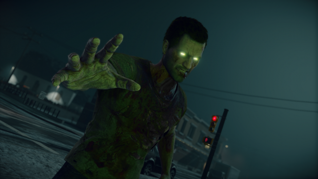
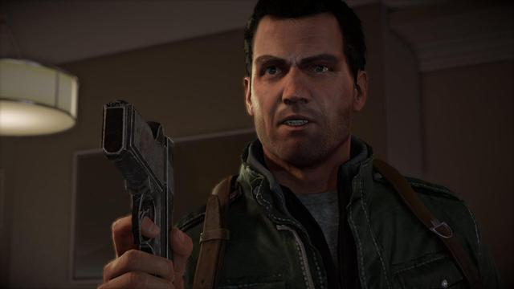

The allure of the original Dead Rising’s goofy and gratuitous zombie slaughter was the reason I bought an Xbox 360 back in 2006. Dead Rising 4 ratchets that arcadey, hack-and-slash power fantasy and self-aware satire up to new heights. Even when technical issues rear their ugly heads, that feelgood loop of wading into the horde and coming out the other side has me feeling like a bonafide badass.
It's no surprise, then, that Dead Rising 4 is the best incarnation of that satisfying and cathartic gameplay yet. It leans harder than ever into its ridiculous combo and weapon-crafting systems, but the core action gameplay, character progression, creative survival, and attitude are still very much central to this tale.
Frank West is the perfect delivery system for all of that. The cocky photographer’s return to the series after sitting out Dead Rising 2 and 3 is like being reunited with an old friend, despite his being voiced by a new actor. He’s still a wiseass, though he’s 16 years older and a little wiser; a wiserass, if you will. He might be the same self-important, sarcastic asshole with a heart of gold, but if Capcom set out to make Frank seem a little weathered with age, then it’s a job well done.
Dead Rising 4 has the best core gameplay the series has ever seen. Its inventive and humorous ways to put down the dead are something I still haven’t tired of, and its surprisingly interesting plot is more than just a zombie-killing delivery system. Despite the technical blemishes that come with the series, its lack of co-op story mode play, and the fun-yet-unreliable multiplayer, Frank West’s return brings the series some fresh ideas, a ton of bloody mayhem, and a whole lot of cracking wise. Here’s hoping he sticks around for a while.